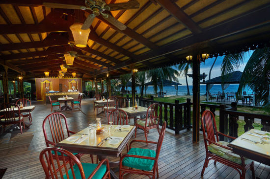
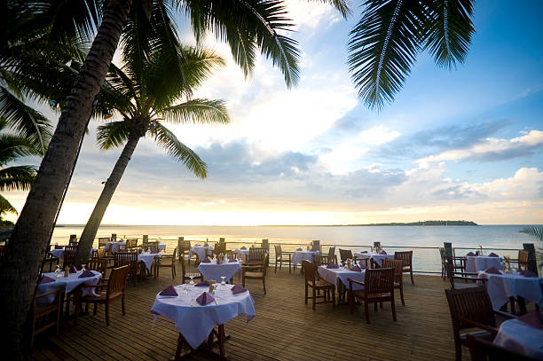

Our Story
KOI Restaurant was first opened in 2nd May 2018 in the heart of Pulau Tioman. The owner of the restaurant, Encik Thaqif have worked under Chef Wan before for 5 years at De Wan, Kuala Lumpur. Despite this, he decides to start operating a restaurant that serves good quality and authentic Malaysian dish. Always holding true to the motto “Koi suka, Aok pun suka”, we were able to attract and built a loyal clientele. So many people loved taking their friends and family to eat at KOI Restaurant over the next year, we quickly outgrew our original location and opened up another restaurant in Temerloh. Treat yourself to the best Malaysian food and customer service at any both of our location in Pahang.
 